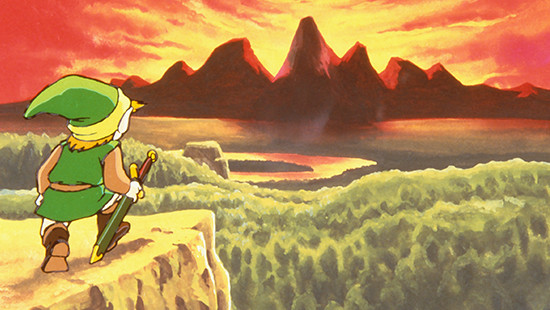

Check out the news about Zelda
Current Time
4/30/2019
2:02:03 PM
Chronology
Best Games
Contact Us
Home
Chronology
Best Games
Contact Us
Hyrule's Hystory :
The Goddesses, the Hero and the Myth.
Home
Chronology
Click here to display the Timeline
From this point, the timeline splits in 2: The Hero's defeat and the Hero's Triumph
Click here to display the Hero's Defeat Timeline

Here is the triumph timeline, that divides in 2.
Click here to display the Child Era Timeline
Click here to display the Adult Era Timeline
Here is where the all timelines join together
Click here to display the final piece of all Timelines so far
×